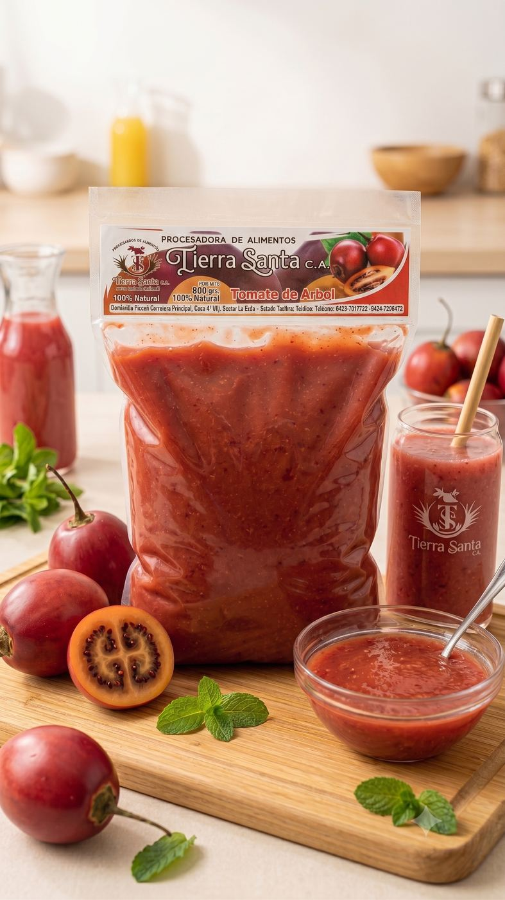

El tomate de árbol aporta un color naranja-rojizo intenso y un sabor agridulce particular, con notas suaves y ligeramente ácidas. La fruta madura se lava, pela, despulpa y tamiza para eliminar semillas y cáscara, obteniendo una pulpa fina y homogénea. Se congela sin aditivos ni conservantes, preservando su color y sabor natural. Es ideal para jugos, salsas, batidos y preparaciones típicas de la gastronomía andina.